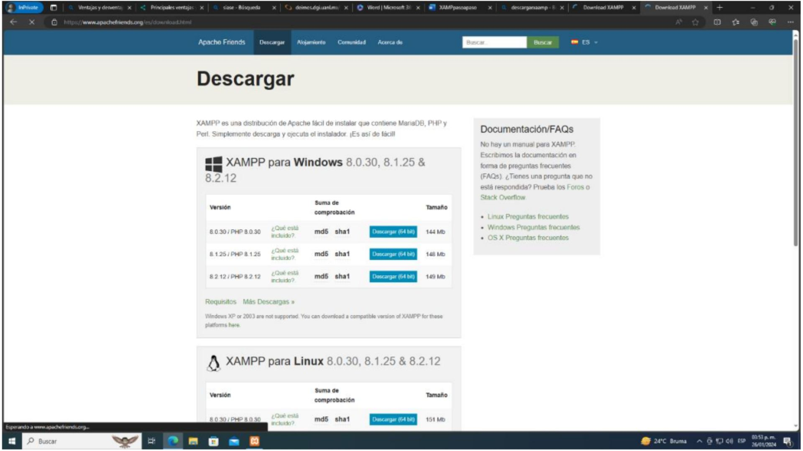
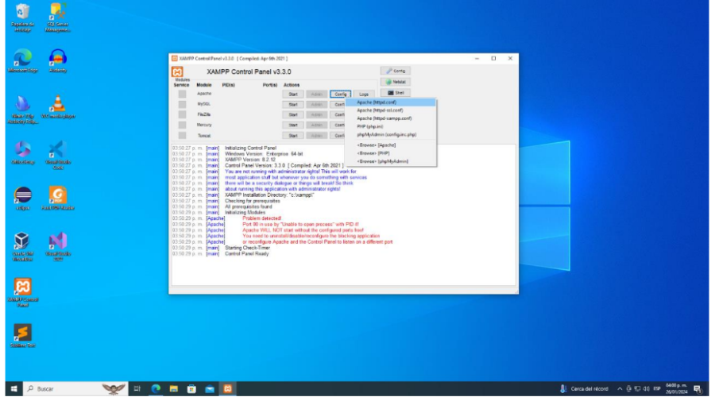
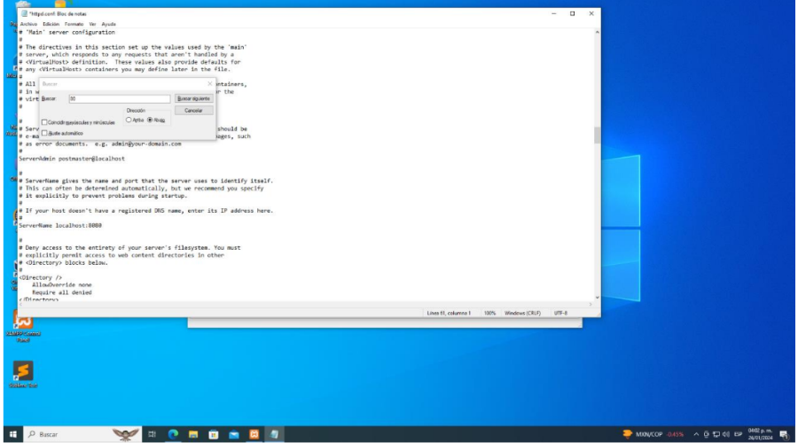
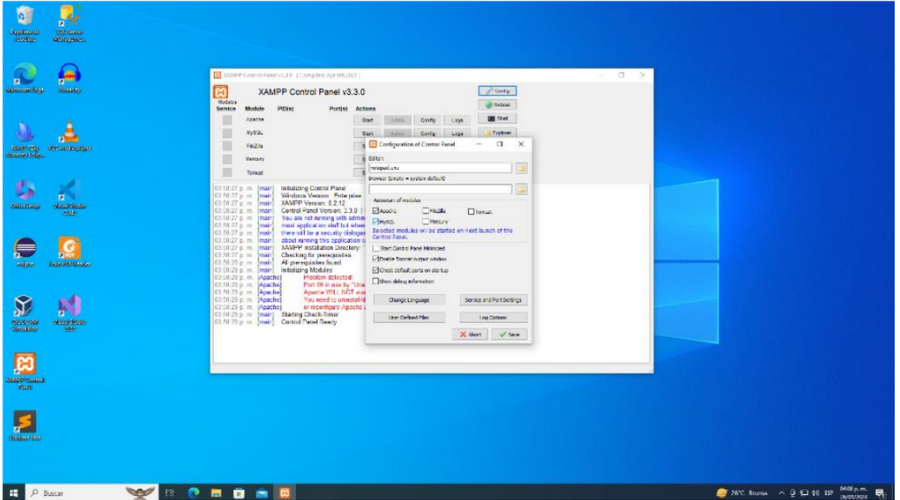
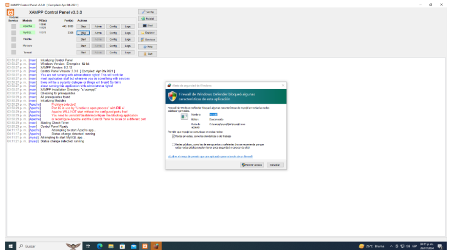
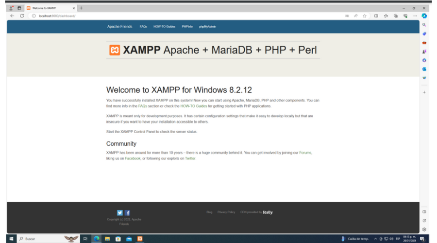

Primero iremos al buscador para poner “Descargar XAMPP” y entramos a la primera opción que nos aparece, luego entramos al apartado para descargar, conde encontraremos distintas formas de descargarlo dependiendo de lo que se requiera. Seleccionamos la opción de nuestra preferencia y hacemos clic al archive .exe que se va a descargar para que comience la instalación. Le daremos “Siguiente” a todo y esperamos hasta que se muestre la siguiente pantalla. Podemos encontrar la página en apachefriends.org.
Cuando se muestre esta pantalla deberemos oprimir el botón “Config” y deberemos seleccionar la primera opción que nos aparece ahí “Apache(httpd.conf)”. Todo este procedimiento lo haremos para tener la salida ainternet para el puerto que nosotros utilizamos.
Se abre el bloc de notas y luego presionar "Ctrl + B" para abrir una pestaña de búsqueda. En esta pestaña, se busca el carácter "80" en el texto y se reemplaza por "8080" en tres partes diferentes del código, si es necesario. Después de hacer estos cambios, se guardan seleccionando "Archivo" y luego "Guardar". Este proceso se repite si hay más instancias del carácter "80" que necesitan ser modificadas.
Seleccionaremos “Config” de la parte superior derecha y se abrirá este apartado en donde primero seleccionamos Apache y MySQL en Autostart of moddiv class="padre"es, luego hacemos clic en Service and Port Settings, nos aseguraremos que en Main Port aparezca “8080”, y si no, entonces lo agregamos y guardamos cambios. Luego, en el apartado de SQL revisamos que en el apartado de Main Port aparezca 3306, una vez que todo esté en orden, guardamos los cambios realizados
Guardamos todos los cambios realizados para después hacer clic en los Start de MySQL y Apache para comenzar con el proceso, y cuando nos aparezca una pestaña para permitir el acceso, lo aceptamos y esperamos que todo se haya realizado y cargado correctamente.
Cuando hayamos finalizado los pasos anteriores, hacemos clic en “Admin” de Apache y nos deberá de dirigir hasta esta página de XAMPP.
